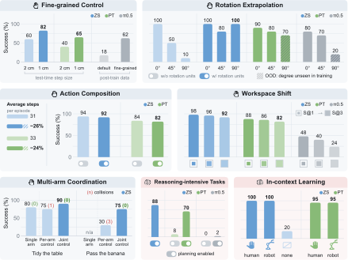
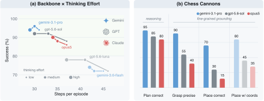
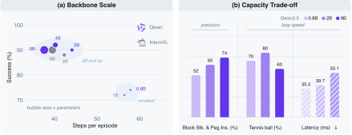
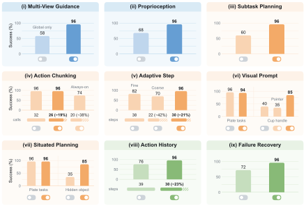

Show-Pro turns a VLM into a situated agent: it perceives, reasons, and acts through a compact set of semantic action units that embodiment-specific interpreters ground into robot motion.
Playing muted — use the speaker icon for narration.
Show-Pro turns a VLM into a situated agent: it perceives, reasons, and acts through a compact set of semantic action units that embodiment-specific interpreters ground into robot motion.
Foundation vision–language models (VLMs) exhibit broad intelligence about the world, yet translating this intelligence into robot control remains challenging. We present Show-Pro, an Embodied Harness that enables VLMs to “play” robots through a compact semantic interface linking intent to action. Show-Pro exposes discrete incremental action units that VLMs can naturally reason over, while embodiment-specific interpreters deterministically ground them into executable robot actions.
Through the same interface, Show-Pro demonstrates the feasibility of directly unlocking closed-source frontier VLMs for zero-shot control and efficiently adapting small-scale models for low-cost deployment. We further develop GUMI (GUI Manipulation Interface), which extends the same semantic action space to GUI-based demonstration collection, allowing humans and agents to “play” robots across embodiments without specialized teleoperation hardware.
Extensive experiments show that Show-Pro generalizes across tasks, embodiments, and environments, outperforming representative agentic and VLA paradigms. This suggests that the right interface can unlock substantial embodied capability from foundation VLMs, without new model capacity or embodiment-specific pretraining.
Robot control is reformulated into parameter-free units that a VLM can reason about directly. Each unit is a bare symbol; the interpreter supplies its metric magnitude, so the same vocabulary drives a 7-DoF Franka, a 6-DoF AgileX, and a simulator without changing the model.

Each step closes the loop: plugins assemble the context, the VLM emits one semantic action unit, and the interpreter grounds it into motion.
32 rollouts, all driven through the same semantic action space.
Every action unit is a labeled key, so demonstrating a task amounts to playing the robot. A human at the keyboard and a GUI agent reading the same screen drive the robot identically, and every recorded step is a ready training pair — no specialized teleoperation hardware required.
A GUI agent driving the dual-arm robot through GUMI, one action unit per keystroke.
Show-Pro supports two complementary routes to generalist control: a zero-shot agent (ZS) driving a frontier VLM, and lightweight post-training (PT) of a much smaller open-source model through the same interface. Both outperform all three baseline families — VLA, VLA-centric agents, and code-as-policy agents.
The advantage holds on the held-out Teddy and Chess tasks never seen in post-training. On sim-to-real, PT succeeds in 13/20 trials when trained only on simulated demonstrations, while the trainable VLA baselines fail entirely.

Physical: finer motion needs only a smaller step in the interpreter (2 cm → 1 cm), with no retraining, while π0.5 reaches 18% on the same data and needs task-specific demonstrations to recover. Composing two units into a diagonal motion cuts steps by 26% for 2 points of success; repeated rotation units extrapolate to an unseen 90°; joint dual-arm prediction lifts handover from 30% to 75% and removes the collisions seen with independent agents. Semantic: with Situated Planning, ZS reaches 88% on tasks requiring reasoning before manipulation, where PT alone gets 8% and π0.5 0%. Given a single video demonstration, ZS follows the demonstrated order in 20/20 trials — from either a human or a robot demonstrator.

Swapping the zero-shot model across five frontier VLMs under the same harness splits them into two tiers: Gemini-3.1 Pro, GPT-5.6-sol and Opus 5 reach 88–96%, while GPT-5.6-luna and Gemini-3.6-flash stay at 72–78%. Raising thinking effort leaves success within noise and mainly shortens episodes (37.2 → 30.5 units for sol) at roughly triple the wall-clock time. The step logs locate the gap: at least 98% of responses are valid action units and 97% of subtask plans are correct, yet the empty-grasp rate rises from 6% to 26%. The chess-cannon probe confirms it — plans are almost always right (19, 17 and 16 of 20) but only 14, 6 and 3 episodes succeed, with placement error growing from 0.4 to 1.9 board squares. Among frontier VLMs with strong reasoning, zero-shot robot control is limited by fine-grained spatial grounding, not by language understanding or planning.

Success is flat from 2B up — five backbones stay within four points of one another (88–92%) — so extra capacity buys little on standard tasks. The two smallest backbones still emit valid units but linger before committing, stretching episodes from 40.7 to 57.1 units. Capacity pays off most on the fine-grained tasks; on a rolling tennis ball the 2B backbone leads both the larger and the smaller ones, the one setting where capacity does not order the results.

Each default plugin is removed one at a time from the full configuration. Multi-View Guidance is worth 38 points (96% → 58%), with failures concentrated on small objects that a distant view cannot localize; Proprioception 28 points, because pixels under-constrain when to close the gripper; Subtask Planning 36 points — without a plan the model drags the object toward the plate instead of lifting it. Optional plugins are switched on only where the task demands them.
@article{chen2026showpro,
title = {Show-Pro: Embodied Harness Enables VLMs to Play Robots},
author = {Chen, Yanzhe and Bai, Zechen and Cao, Zhijun and Zeng, Wenzheng and
Lin, Kevin Qinghong and Lin, Yiqi and Liang, Guoqiang and
Ma, Kevin Yuchen and Huang, Qiming and Shou, Mike Zheng},
journal = {arXiv preprint},
year = {2026}
}